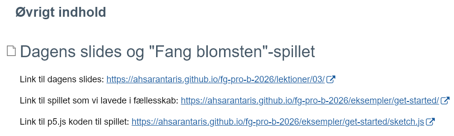

Andreas Hussain Sarantaris · 12-11-2026
Frederikssund Gymnasium · Programmering B
Queue og BinaryMatrixGraph.shortestPathBFS() der finder den korteste vej i grafen repræsenteret ved den binære matrix.console.log() eksplicit.
https://ahsarantaris.github.io/fg-pro-b-2026/lektioner/04/console.log() til at debugge.console.log() nævnes i 4 ud af de 7 p5.js tutorials vi gik igennem og jeg gav jer som lektie at læse.
enqueue() og neighbors() i henholdsvis Queue og BinaryMatrixGraph.shortestPathBFS() har tre datastrukturer, hvor den ene (Queue) har vi selv implementeret.visitedSet er et Set der gemmer alle de felter der allerede er besøgt.
Set og hvordan tjekker man om noget er i sættet?prevMap er et Map der for hvert felt gemmer det felt som det kom fra.
Map og hvordan får man værdien til en bestemt nøgle?key()-metoden i BinaryMatrixGraph-klassen når vi skal indsætte knuderne i datastrukturerne.
visitedSet?
/**
* @template TNode
* @param {TNode} s - Start node
* @param {TNode} t - Terminal node
* @param {object} g - Graph object with the methods
* numberOfNodes(), key(), identicalNodes() and neighbors().
* @returns {TNode[]} An array of nodes forming the
* shortest path from s to t,
* Returns an empty array if no path from s to t exists.
*/
function shortestPathBFS(s,t,g) {
let path = [];
let visitedSet = new Set();
let prevMap = new Map();
let q = new Queue(g.numberOfNodes());
// Implementér resten af koden herunder
// ...
return path;
}
algoritms.md. shortestPathBFS()-funktionen.index.html og se om den korteste vej tegnes.F12 eller højreklik og vælg "Undersøg"/"Inspect".console.log(...), hvor | Punkt * | Start + varighed | Aktivitet | Indhold |
|---|---|---|---|
| 1U | 13:50 + 20 | Overblik over forløbet og sidste lektion | Hvad har vi været igennem sidste lektion og generelt i dette forløb? |
| 1Ø | 14:10 + 10 | Lektier til i dag | Spørgsmål til lektierne. |
| 2U | 14:20 + 10 | Introduktion til delopgave 3 | Jeg gennemgår kort delopgave 3, startkoden og pseudokoden. |
| 2Ø | 14:30 + 45 | I begynder på delopgave 3 | I får noget tid til at lave delopgaven, resten er lektier. |
| 3U | 15:15 + 5 | Opsamling, lektier og næste lektion | Hjemmearbejde til næste gang og emnerne for næste lektion. |
| 3Ø | 15:20 + 5 | Afrunding | Færdiggør jeres arbejde og reflektér over jeres læring. |